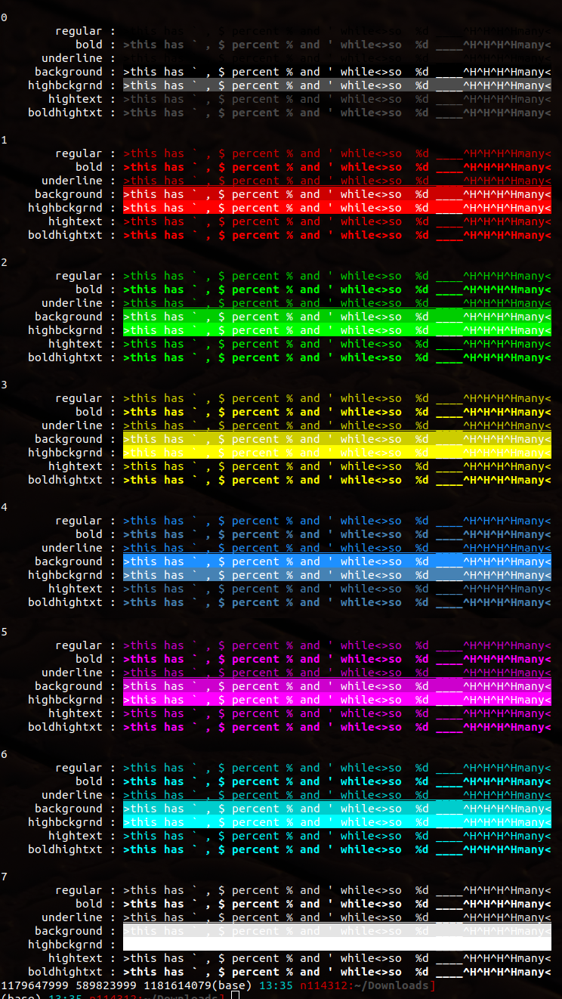

This notebook uses the low-level phylogenetic library biomcmc-lib (commit 5975331).
This week I've been refactoring the random and hash modules of biomcmc-lib. I am also adding user-friendly functionality — linux fortunes and coloured printing. Here we can see my test with colours in printf().
#include <stdio.h>
const char *mytext[] = {"this has ` , $ percent \% and ' while", "so \%d ____^H^H^H^Hmany"};
const char col_reset[] = "\e[0m";
const char *rownames[7] = {"regular", "bold", "underline", "background", "highbckgrnd", "hightext", "boldhightxt"};
const char *prt_col[][8]={ // 0-black 1-red 2-grn 3-yel 4-blu 5-mag 6-cyn 7-white
{"\e[0;30m", "\e[0;31m", "\e[0;32m", "\e[0;33m", "\e[0;34m", "\e[0;35m", "\e[0;36m", "\e[0;37m"}, // 0 regular text
{"\e[1;30m", "\e[1;31m", "\e[1;32m", "\e[1;33m", "\e[1;34m", "\e[1;35m", "\e[1;36m", "\e[1;37m"}, // 1 regular bold text
{"\e[4;30m", "\e[4;31m", "\e[4;32m", "\e[4;33m", "\e[4;34m", "\e[4;35m", "\e[4;36m", "\e[4;37m"}, // 2 regular underline text
{"\e[40m", "\e[41m", "\e[42m", "\e[43m", "\e[44m", "\e[45m", "\e[46m", "\e[47m"}, // 3 regular background
{"\e[0;100m", "\e[0;101m", "\e[0;102m", "\e[0;103m", "\e[0;104m", "\e[0;105m", "\e[0;106m", "\e[0;107m"}, // 4 high intensity underground
{"\e[0;90m", "\e[0;91m", "\e[0;92m", "\e[0;93m", "\e[0;94m", "\e[0;95m", "\e[0;96m", "\e[0;97m"}, // 5 high intensity text
{"\e[1;90m", "\e[1;91m", "\e[1;92m", "\e[1;93m", "\e[1;94m", "\e[1;95m", "\e[1;96m", "\e[1;97m"} // 6 bold high intensity text
};
int main() {
int i,j;
for (i=0;i<8;i++) {
printf ("\n%d\n", i);
for (j=0; j < 7; j++) printf ("%15s : %s>%s<>%s<%s\n",rownames[j],prt_col[j][i],mytext[0], mytext[1], col_reset);
};
// test with marsaglia constants (should print prime numbers)
printf ("%5d %5d %5d", (18000<<16)-1, (18000<<15)-1, (18030<<16)-1);
}
And this is the same output in my terminal (black background): 
In biomcmc-lib there are a few vectors with "random numbers" (some actually from random.org, some random prime numbers used in hash functions, etc.). The function biomcmc_salt_vector32_from_spice_table() will populate a vector with these number in an order specified by the particular seed[4] values.
//%cflags: -I/usr/users/QIB_fr005/deolivl/Academic/Quadram/009.supersptree/biomcmc-lib/lib
//%cflags: -I/usr/users/QIB_fr005/deolivl/Academic/Quadram/009.supersptree/build.191216/biomcmc-lib/lib
//%cflags: /usr/users/QIB_fr005/deolivl/Academic/Quadram/009.supersptree/build.191216/biomcmc-lib/lib/.libs/libbiomcmc.a
//%cflags:-lm
#include <biomcmc.h>
int
main (int argc, char **argv)
{
uint32_t i,j;
uint32_t seeds[]={0,1,2,3}, vec[32], nvec=34;
uint8_t *c;
size_t size = sizeof (vec);
for (i=0;i<2;i++) {
seeds[0] = i;
for (j=0;j<4;j++) printf ("%8x ",seeds[j]);
printf ("original seeds\n");
biomcmc_salt_vector32_from_spice_table (vec, nvec, seeds);
printf("\nseed: %u\n", i);
//for (j=0; j<nvec;j++) {printf("%12u ", vec[j]); if (!((j+1)%8)) printf ("\n"); }
c = (uint8_t*) vec;
size = sizeof (vec);
for (; (size > 0); c++, size--) {printf ("%4x ", *c); if (!((size-1)%16)) printf ("\n"); }
}
for (i=0;i<15;i++) {
for (j=0;j<4;j++) printf ("%8x ",biomcmc_hashint_salted (j, i));
printf ("<< for hash %u\n", i);
}
return EXIT_SUCCESS;
}
//%cflags: -I/usr/users/QIB_fr005/deolivl/Academic/Quadram/009.supersptree/biomcmc-lib/lib
//%cflags: -I/usr/users/QIB_fr005/deolivl/Academic/Quadram/009.supersptree/build.191216/biomcmc-lib/lib
//%cflags: /usr/users/QIB_fr005/deolivl/Academic/Quadram/009.supersptree/build.191216/biomcmc-lib/lib/.libs/libbiomcmc.a
//%cflags:-lm
#include <biomcmc.h>
int
main (int argc, char **argv)
{
uint32_t i,j, n_iter = 10000;
clock_t time0, time1;
bipartition bp = new_bipartition (70);
biomcmc_random_number_init (0ULL);
printf ("STEP 1 : check that all pop counts are correct\n");
for (i=0; i<4; i++) {
for (j=0; j < bp->n->ints; j++) {
bp->bs[j] = biomcmc_rng_get ();
}
bipartition_print_to_stdout (bp);
printf ("\t%4d %4d %4d %4d\n",
bipartition_count_n_ones_pop0(bp),
bipartition_count_n_ones_pop1(bp),
bipartition_count_n_ones_pop2(bp),
bipartition_count_n_ones_pop3(bp));
}
del_bipartition (bp); bp = new_bipartition (50000); // bigger bipartition
printf ("STEP 2: time pop counts (pop1 is default, and we call through a wrapper to discount this overhead)\n");
time0 = clock ();
for (i=0; i < n_iter; i++) {
for (j=0; j < bp->n->ints; j++) bp->bs[j] = biomcmc_rng_get ();
bipartition_count_n_ones (bp);
}
time1 = clock (); fprintf (stderr, "pop1: %.8f secs\n", (double)(time1-time0)/(double)CLOCKS_PER_SEC);
time0 = time1;
for (i=0; i < n_iter; i++) {
for (j=0; j < bp->n->ints; j++) bp->bs[j] = biomcmc_rng_get ();
bipartition_count_n_ones_pop0 (bp);
}
time1 = clock (); fprintf (stderr, "pop0: %.8f secs\n", (double)(time1-time0)/(double)CLOCKS_PER_SEC);
time0 = time1;
for (i=0; i < n_iter; i++) {
for (j=0; j < bp->n->ints; j++) bp->bs[j] = biomcmc_rng_get ();
bipartition_count_n_ones_pop2 (bp);
}
time1 = clock (); fprintf (stderr, "pop2: %.8f secs\n", (double)(time1-time0)/(double)CLOCKS_PER_SEC);
time0 = time1;
for (i=0; i < n_iter; i++) {
for (j=0; j < bp->n->ints; j++) bp->bs[j] = biomcmc_rng_get ();
bipartition_count_n_ones_pop3 (bp);
}
time1 = clock (); fprintf (stderr, "pop3: %.8f secs\n", (double)(time1-time0)/(double)CLOCKS_PER_SEC);
time0 = time1;
del_bipartition (bp);
biomcmc_random_number_finalize ();
return EXIT_SUCCESS;
}
Exported from Programming/005.random_hash.ipynb committed by Leonardo de-Oliveira-Martins (QIB) on Wed Jan 29 10:38:04 2020 revision 2, 6933970